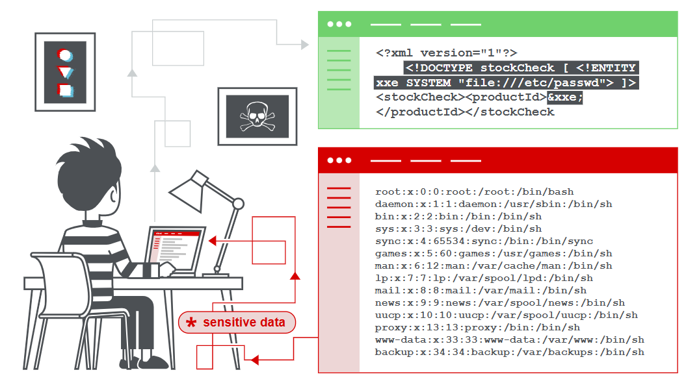

XML external entity (XXE) injection
In this section, we’ll explain what XML external entity injection is, describe some common examples, explain how to find and exploit various kinds of XXE injection, and summarize how to prevent XXE injection attacks.
What is XML external entity injection?
XML external entity injection (also known as XXE) is a web security vulnerability that allows an attacker to interfere with an application’s processing of XML data. It often allows an attacker to view files on the application server filesystem, and to interact with any back-end or external systems that the application itself can access.
In some situations, an attacker can escalate an XXE attack to compromise the underlying server or other back-end infrastructure, by leveraging the XXE vulnerability to perform server-side request forgery (SSRF) attacks.

Labs
If you’re already familiar with the basic concepts behind XXE vulnerabilities and just want to practice exploiting them on some realistic, deliberately vulnerable targets, you can access all of the labs in this topic from the link below.
How do XXE vulnerabilities arise?
Some applications use the XML format to transmit data between the browser and the server. Applications that do this virtually always use a standard library or platform API to process the XML data on the server. XXE vulnerabilities arise because the XML specification contains various potentially dangerous features, and standard parsers support these features even if they are not normally used by the application.
Read more
XML external entities are a type of custom XML entity whose defined values are loaded from outside of the DTD in which they are declared. External entities are particularly interesting from a security perspective because they allow an entity to be defined based on the contents of a file path or URL.
What are the types of XXE attacks?
There are various types of XXE attacks:
Exploiting XXE to retrieve files, where an external entity is defined containing the contents of a file, and returned in the application’s response.
Exploiting XXE to perform SSRF attacks, where an external entity is defined based on a URL to a back-end system.
Exploiting blind XXE exfiltrate data out-of-band, where sensitive data is transmitted from the application server to a system that the attacker controls.
Exploiting blind XXE to retrieve data via error messages, where the attacker can trigger a parsing error message containing sensitive data.
这里的说法有点奇怪，type在中文是类型的意思，但是上面的描述似乎是在说XXE攻击的用途。
Exploiting XXE to retrieve files
To perform an XXE injection attack that retrieves an arbitrary file from the server’s filesystem, you need to modify the submitted XML in two ways:
Introduce (or edit) a
DOCTYPEelement that defines an external entity containing the path to the file.Edit a data value in the XML that is returned in the application’s response, to make use of the defined external entity.
For example, suppose a shopping application checks for the stock level of a product by submitting the following XML to the server:
<?xml version="1.0" encoding="UTF-8"?>
<stockCheck><productId>381</productId></stockCheck>
The application performs no particular defenses against XXE attacks, so you can exploit the XXE vulnerability to retrieve the /etc/passwd file by submitting the following XXE payload:
<?xml version="1.0" encoding="UTF-8"?>
<!DOCTYPE foo [ <!ENTITY xxe SYSTEM "file:///etc/passwd"> ]>
<stockCheck><productId>&xxe;</productId></stockCheck>
This XXE payload defines an external entity &xxe; whose value is the contents of the /etc/passwd file and uses the entity within the productId value. This causes the application’s response to include the contents of the file:
Invalid product ID: root:x:0:0:root:/root:/bin/bash
daemon:x:1:1:daemon:/usr/sbin:/usr/sbin/nologin
bin:x:2:2:bin:/bin:/usr/sbin/nologin
...
Note
With real-world XXE vulnerabilities, there will often be a large number of data values within the submitted XML, any one of which might be used within the application’s response. To test systematically for XXE vulnerabilities, you will generally need to test each data node in the XML individually, by making use of your defined entity and seeing whether it appears within the response.
LAB
APPRENTICE-Exploiting XXE using external entities to retrieve files
切记不要拼写错误关键字
solved
Exploiting XXE to perform SSRF attacks
Aside from retrieval of sensitive data, the other main impact of XXE attacks is that they can be used to perform server-side request forgery (SSRF). This is a potentially serious vulnerability in which the server-side application can be induced to make HTTP requests to any URL that the server can access.
To exploit an XXE vulnerability to perform an SSRF attack, you need to define an external XML entity using the URL that you want to target, and use the defined entity within a data value. If you can use the defined entity within a data value that is returned in the application’s response, then you will be able to view the response from the URL within the application’s response, and so gain two-way interaction with the back-end system. If not, then you will only be able to perform blind SSRF attacks (which can still have critical consequences).
In the following XXE example, the external entity will cause the server to make a back-end HTTP request to an internal system within the organization’s infrastructure:
<!DOCTYPE foo [ <!ENTITY xxe SYSTEM "http://internal.vulnerable-website.com/"> ]>
LAB
APPRENTICE-Exploiting XXE to perform SSRF attacks
Not solved
Blind XXE vulnerabilities
Many instances of XXE vulnerabilities are blind. This means that the application does not return the values of any defined external entities in its responses, and so direct retrieval of server-side files is not possible.
Blind XXE vulnerabilities can still be detected and exploited, but more advanced techniques are required. You can sometimes use out-of-band techniques to find vulnerabilities and exploit them to exfiltrate data. And you can sometimes trigger XML parsing errors that lead to disclosure of sensitive data within error messages.
Read more
How to find and test for XXE vulnerabilities
The vast majority of XXE vulnerabilities can be found quickly and reliably using Burp Suite’s web vulnerability scanner.
Manually testing for XXE vulnerabilities generally involves:
Testing for file retrieval by defining an external entity based on a well-known operating system file and using that entity in data that is returned in the application’s response.
Testing for blind XXE vulnerabilities by defining an external entity based on a URL to a system that you control, and monitoring for interactions with that system. Burp Collaborator is perfect for this purpose.
Testing for vulnerable inclusion of user-supplied non-XML data within a server-side XML document by using an XInclude attack to try to retrieve a well-known operating system file.
Note
Keep in mind that XML is just a data transfer format. Make sure you also test any XML-based functionality for other vulnerabilities like XSS and SQL injection. You may need to encode your payload using XML escape sequences to avoid breaking the syntax, but you may also be able to use this to obfuscate your attack in order to bypass weak defences.
How to prevent XXE vulnerabilities
Virtually all XXE vulnerabilities arise because the application’s XML parsing library supports potentially dangerous XML features that the application does not need or intend to use. The easiest and most effective way to prevent XXE attacks is to disable those features.
Generally, it is sufficient to disable resolution of external entities and disable support for XInclude. This can usually be done via configuration options or by programmatically overriding default behavior. Consult the documentation for your XML parsing library or API for details about how to disable unnecessary capabilities.